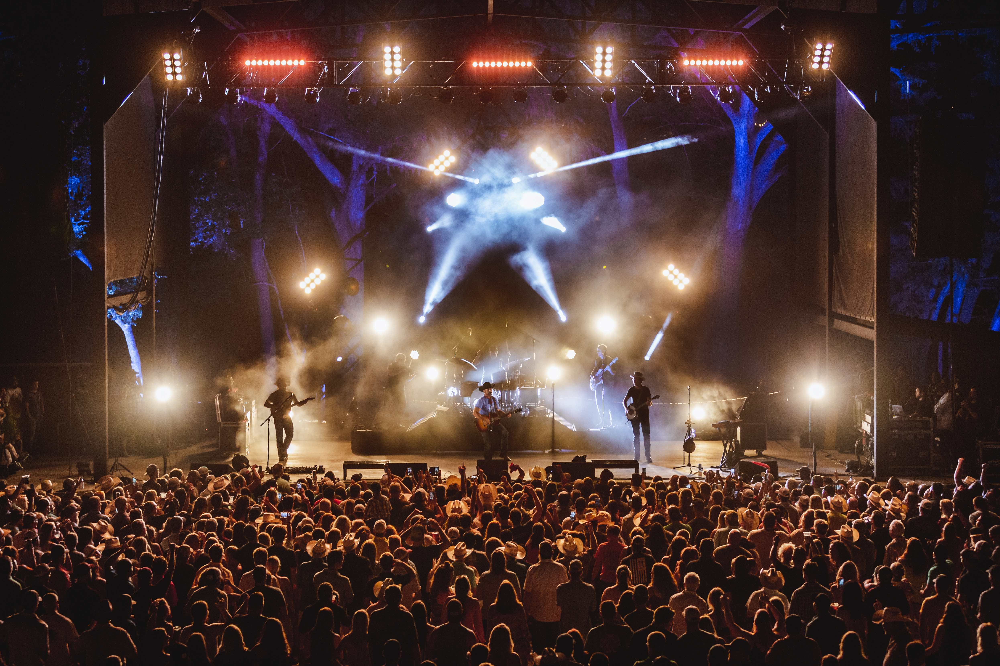
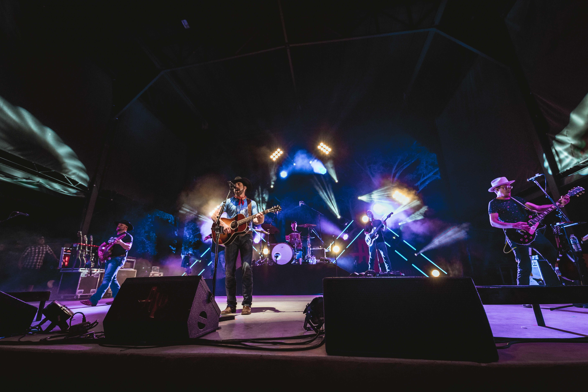
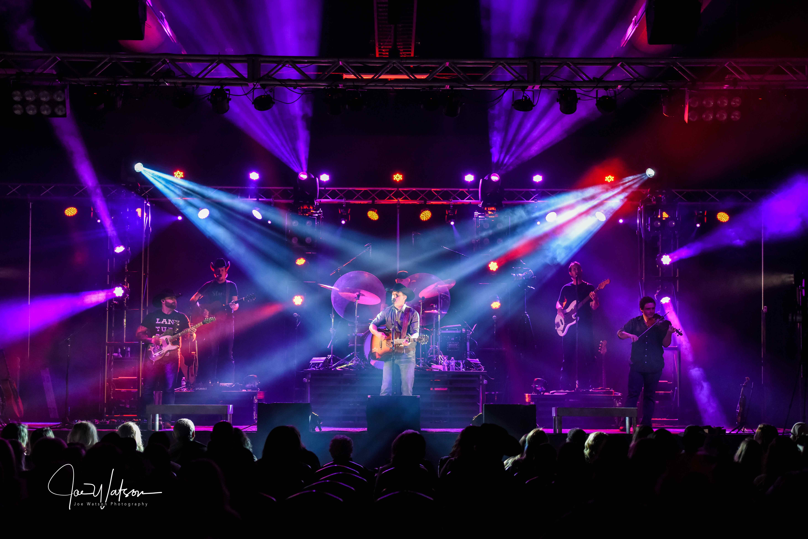
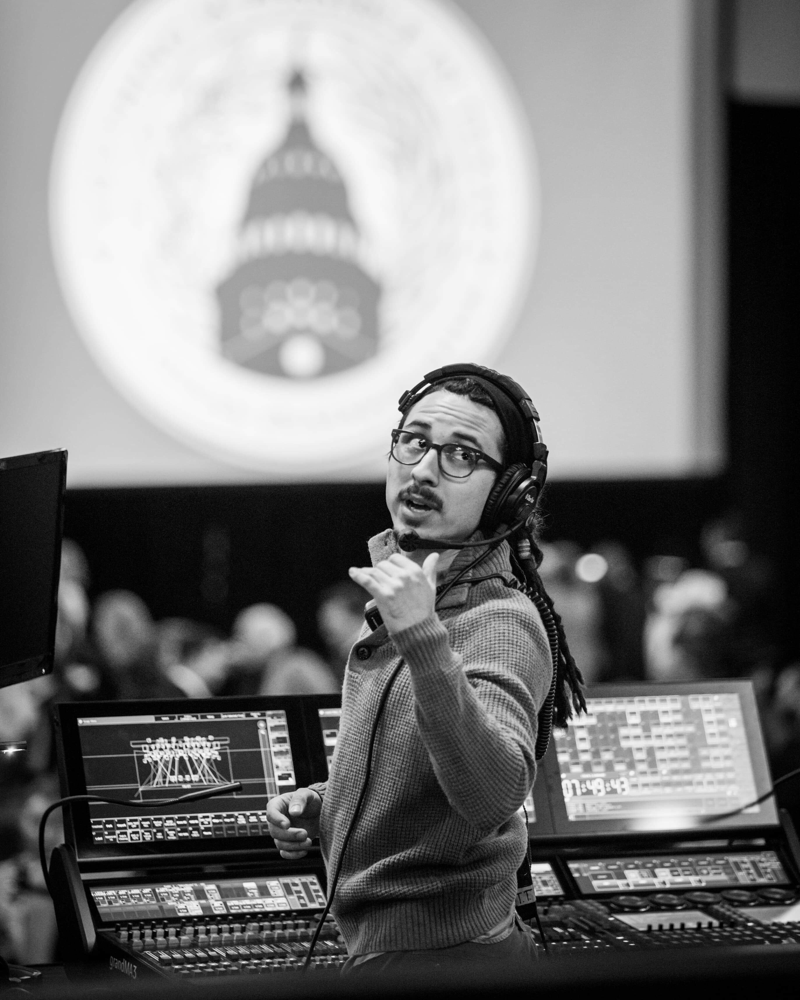

A motivated, creative, and solution focused professional focused on the
customer experience. As account manager, grew company’s client base and
maintained positive relationships with stakeholders.
Managed teams of 6+ as chief lead to creatively problem solve technical
issues in high pressure environments. Collaborated with design teams to
plan, build, and execute complex multisystem solutions focused on
customer satisfaction.
Adapted complex technical software to a simple format for clients to
understand while delivering excellence in satisfying clients’ needs.
Aaron Watson, Director of Lighting & Video Analysis
Design of lighting rig for ‘Vaquero’ and ‘Red Bandana’ Tour. Operation
of grandMA2 and Resolume Arena. Led crews of 4+ weekly to build / strike
lighting rig.
120+ shows a year on international tour with Texas Country artist.
Notable performances include Ryman Auditorium, Stagecoach 2018, and
Houston Rodeo 2017 with an audience of 50,000+.
Creative Production & Design, Lighting & Video Analysis / IT Lead
Lighting & Video Operator and Technician for various EDM festivals. Led
crews of 6+ for build / strike of lighting and video equipment.
Served as FOH video tech to support touring Video Directors. Notable
festivals include Decadence Arizona NYE EDM Festival 2016 & 2017.
Heard Entertainment, Lighting & Video Director
150+ performances of multiple music genres at iconic Austin, TX, venue
Empire Control Room & Garage. Projection mapping & blending of multiple
projectors onto various art installations.
House LD & VD forinternational artists during SXSW 2015 & 2016 - notable
artists include Gary Clark Jr., George Clinton, & Steve Aoki. LD for two
seasons of televised PBS event ‘Stand Up Empire’.
Venue received 2015 Austin Music Industry Award for ‘Best Club Lighting’
due to visual team’s excellence
Aaron Watson Tours with Bandit Lites | PLSN 2017
Anthony McCoy with Aaron Watson's Tour | PLSN 2018
LD Systems Puts The Texas In Aaron Watson's Tour | Live Design2019
University of Texas at Austin, Class of 2014 | Theatre and Dance, B.A.
with Focus in Acting
Certificate in Business Foundations, McCombs School of Business

Aaron Watson live at Whitewater Amphitheater

Aaron Watson live at Whitewater Amphitheater

Aaron Watson live in Tulsa, OK

Photo of me working the lighting console at the 2019 Texas Inaugural Ball